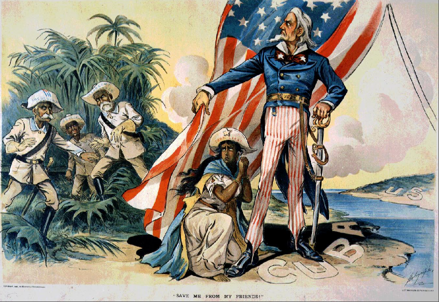

Imperialism had many important changes in our world, however nowadays It has more negative effects in the modern world today rather than positive effects. A positive effect is seen how the larger nations gave to the smaller colonies. The nations built them transport such as roads, canals, and railways. Showed them new technologies such as the telegraph, showed them newspapers, established schools for them, gave them the blessing of their civilization, and overall made them economized. They were part of modern culture after this happened.
A negative effect is that the colonies working the mother country's labor didn’t civilize the smaller colonies. They were simply put to work as cheap labor, essentially slaves. They had zero freedom, and had to do whatever the mother country said since it had so much power over them, it exploited them.
Imperialism is never considered as a good cause and effect. At first when it occurs it may seem as a positive effect, but in the long run, for example in this case it was a negative effect.
Some think it's a positive thing but overall, it almost always leads to a negative effect. Even though modern Imperialism was around 100 years ago, it still affects us, and how our nation is broken down.
The U.S. gained a lot of land via imperialism from 1910-1917 the Treaty of Guadalupe Hidalgo. By its terms, Mexico ceded 55 percent of its territory, including the present-day states California, Nevada, Utah, New Mexico, most of Arizona and Colorado, and parts of Oklahoma, Kansas, and Wyoming.